#E-team-study
UI勉強会Eチーム
振り返り

振り返り
リーダー
雨宮 未早都
メンバー内でわからないことなどが発生した際、画面共有などをしながらお互いに解決方法を調べたりなどして、協力して解決したりできたのが良かったです。
名前は聞いたことがあったけど触れたことのないツールばかりだったので、結構苦戦した印象でした。ただ、わからない中で色々調べたりしながら実際にツールを使ってみることで、実装までの流れみたいなものを少しでも理解できるようになれたので良かった。
長縄 大司
SVN,Gitと利用してきたが、エンジニア頼りで1から設定はしていなかったので、勉強になりました。また、多人数で作業してなかったので、色々と作業の被り等での対応は勉強になりました。
使用した方がいなかったり、自分自身も良く解ってない部分があったので、全員のナレッジとしては良かったと考えます。エンジニアに組み込まれるまではまだいかないとしても、初手としてついていける感じになれたとは思います。
松本 彩奈
業務でGithubを使う機会が全くないため、どういうツールなのか全く知りませんでした。
今回、Githubでコードを共同編集するというのを体験できたことで、エンジニアの普段の業務の理解が深まりました。
最初は自分のプッシュやマージで他の人の作業に影響がないか、ドキドキしました。後半はメンバーの方にデータバックアップをしていただいたことで安心感があったので、自分で進められることができてよかったです。